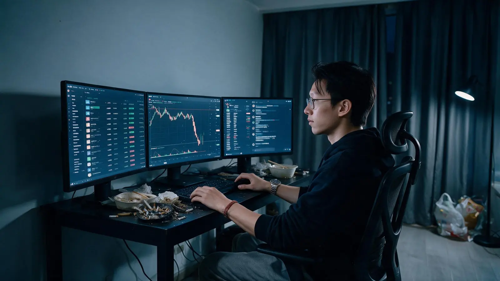
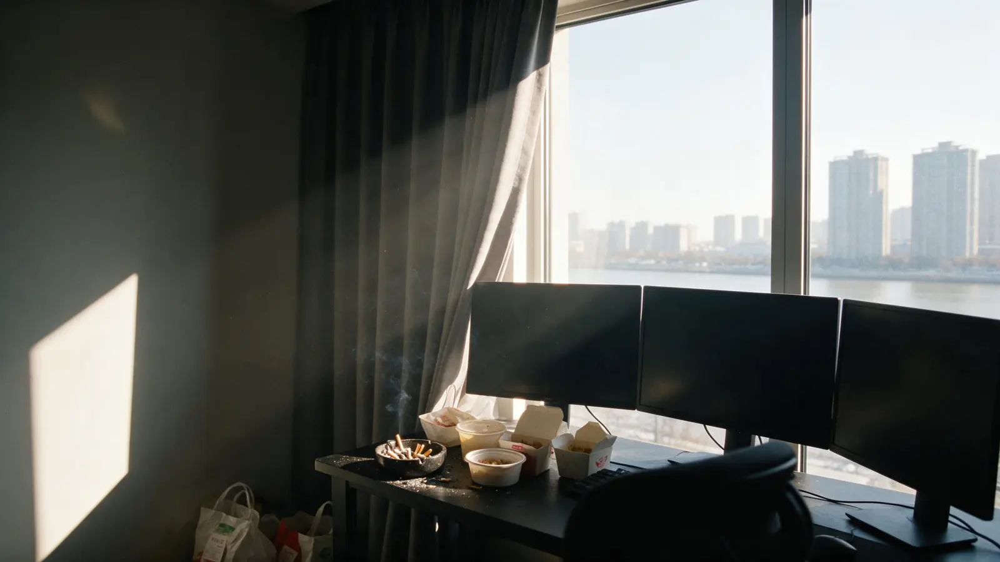
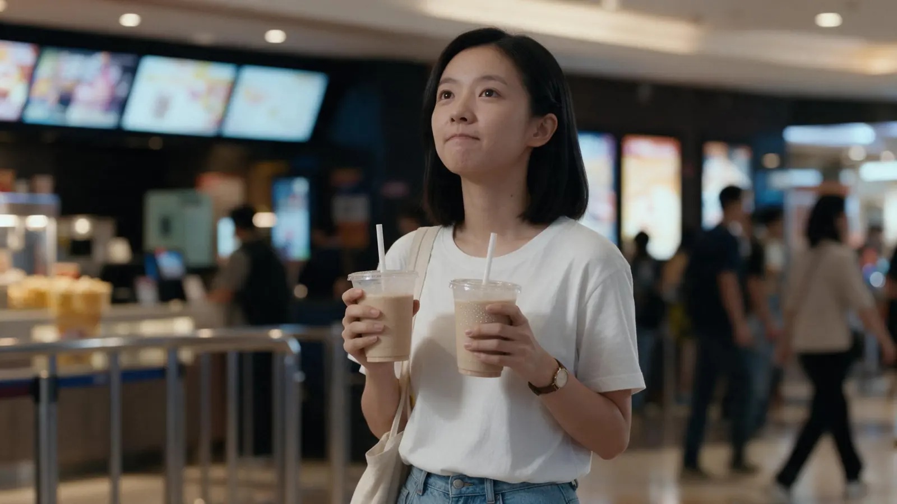
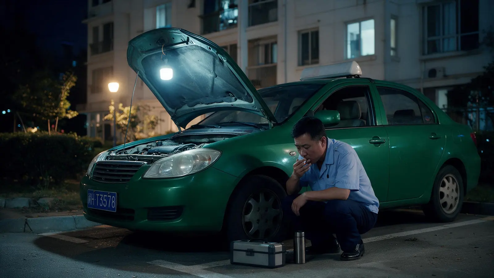
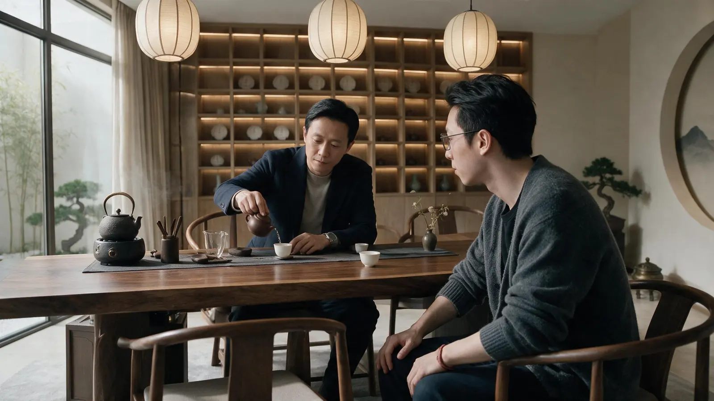
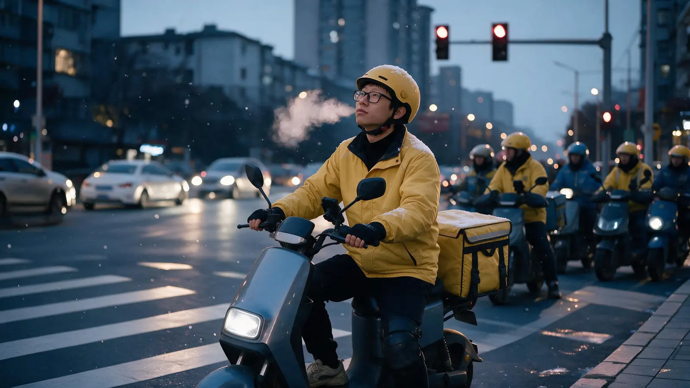
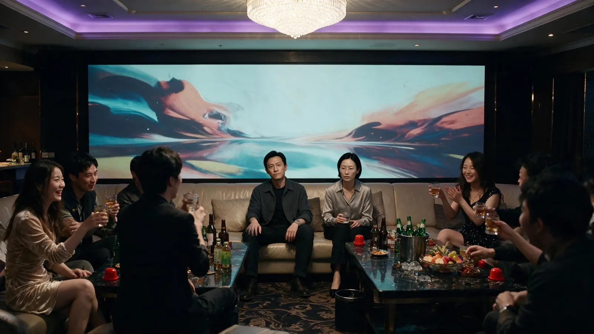

01
Stories you can play能玩的故事
Interactive films that live inside Flap: pictures, sound and voice, with every choice in the player's hands.住在 Flap 里的互动影视：画面、声音、配音，每一个选择都交给玩家。
Innovative products for the Flap ecosystem. 致力于制作 Flap 生态上的创新产品
What we make我们做什么
Interactive films that live inside Flap: pictures, sound and voice, with every choice in the player's hands.住在 Flap 里的互动影视：画面、声音、配音，每一个选择都交给玩家。
Products built so the fun runs longer than the first candle, where the token and the experience move forward together.让好玩比第一根阳线活得更久，让代币和体验一起往前走。
Art, music, voice and code, all made in-house, down to the last brushstroke.画面、音乐、配音和代码，都自己做，细到最后一笔。
First work首部作品


At midnight on New Year's Eve, Chen Du loses everything he made in four years of trading. By morning he has sent his worst address to a studio called Lighthouse. 跨年夜零点，陈渡输光了四年攒下的一切。第二天早上，他把亏得最惨的那个地址，发给了一个叫「灯塔」的工作室。
In the months that follow he learns to read the chain from a man everyone calls the Captain, and has to decide which side of it he wants to stand on. Some choices cost everything; some cost nothing and still change who he becomes. 接下来的几个月，他跟着船长学会读懂链上的每一笔账，也要决定自己站在哪一边。有的选择会让你归零，有的一分钱不花，却决定了他会变成什么样的人。
An interactive film made to be played inside Flap, told across two timelines: the bull run of 2021 and the chain of 2026. 一部做在 Flap 里、可以玩的互动影视，两条时间线交织：2021 年的牛市，和 2026 年的链上。
Stills剧照






The studio关于我们
Spindrift is the spray the wind lifts off a breaking wave: the small, bright part of something vast. Spindrift，是浪头被风吹起的那一点飞沫，巨浪里最小、最亮的那一点。
Spindrift Technology Studio is an independent team dedicated to building innovative products for the Flap ecosystem. Our first, CROSSING, is an interactive film about the chain, told from inside it. Spindrift Technology Studio 是一支独立团队，致力于制作 Flap 生态上的创新产品。首部作品《渡》，是一部从链上讲链上的互动影视。
Contact联系